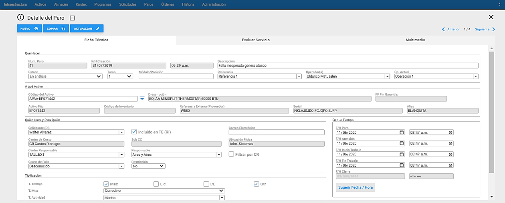
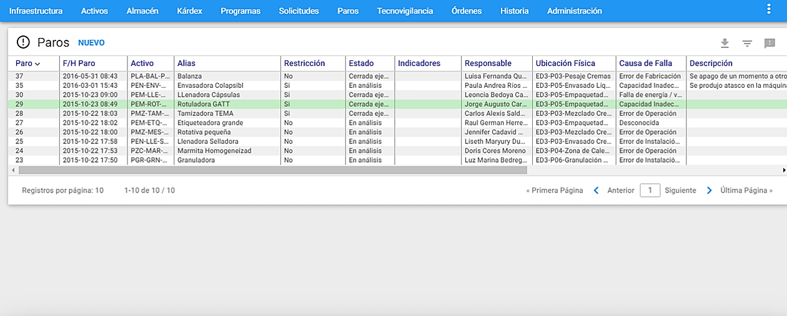
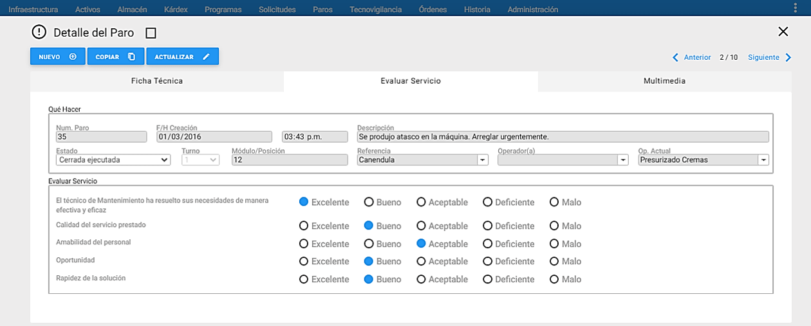

Programas de Mantenimiento
Qué es un Programa de Mantenimiento (PM) y cuál es su objetivo. Cómo se define y cómo trabaja. Cómo se modifica. Son las preguntas básicas que obtienen respuesta en el presente capítulo.
Conceptos Básicos de Programas de Mantenimiento
Dentro del ciclo de Gestión de Mantenimiento en el AM** los Programas de Mantenimiento (PMs) apoyan las tres primeras etapas del ciclo, siendo la primera la Planeación, la segunda la Presupuestación y la tercera la Programación. Para las dos primeras etapas, éste módulo ejecuta el proceso de Proyección, sobre un periodo futuro, de largo plazo, sin generar Órdenes de Trabajo. Para la tercera etapa el proceso de Programación se ejecuta en forma idéntica, desde el módulo de Ordenes de Trabajo. A pesar de que se ejecuta desde allí, la base del proceso son los Programas de Mantenimiento.
Un Programa de Mantenimiento (PM) es un conjunto de información que permite definir labores de Mantenimiento, para que sean ejecutadas en forma cíclica, repetitiva y periódica o sistemática, sobre un Activo. Ella puede ser de tipos: Preventivo, Predictivo, Metrología, Lubricación, Inspección, Otros, Otros Mantenimiento y los que se definan en la tabla de Tipos de mantenimiento en el módulo de Infraestructura.
Los Programas de Mantenimiento (PMs), son un eje estratégico de AM**. Ellos son modificables y adecuables mediante la retroalimentación de los resultados obtenidos de distintos análisis sobre la Historia, con el objeto de afinarlos y lograr una proyección para Presupuesto del nuevo periodo, más ajustada y de acuerdo al desempeño real de los periodos anteriores.
Definir un Plan de Mantenimiento para el largo plazo, a través de un conjunto sólido de Programas, sienta las bases para una gestión avanzada, garantizando al grupo gestor de Mantenimiento, la información permanente de sus labores proyectadas a futuro y posibilitando sobre ellas el establecer prioridades y asignar recursos, para garantizar una ejecución eficaz.
Un PM es el conjunto de información que describe una Tarea a ser ejecutada cíclica o sistemáticamente desde el momento de su definición, en adelante. En general, un PM cubre los siguientes tópicos alrededor de la tarea que se programa
- Qué Activo o Activo es el Objeto de la Actividad.
- Qué Actividad se va a ejecutar. (Descripción del PM).
- Quién realiza la Actividad (Centro Responsable).
- Quién asume los Costos de la Actividad (Centro de Costo).
- Cuánto Tiempo demora la ejecución de la Actividad (Tiempo Estimado).
- Cuánto cuesta la ejecución de la Actividad (Presupuesto detallado de Costos).
- Cuándo se debe ejecutar la Actividad (Criterios de Programación).
- Cómo se debe ejecutar la Actividad (Instructivo o procedimiento a seguir).
Además de la información característica que se acaba de mencionar, un PM se define y enmarca en cada uno de los siguientes atributos: Tipo de Mantenimiento, Tipo de Trabajo y Tipo de Actividad, que denotan el tipo y contexto del mismo. Esta información se complementa con dos definiciones: Prioridad y un indicativo de la necesidad de que el Activo o Activo este inoperante “Activo parado”.
Un PM se define con el objeto de que él genere, automáticamente, con la anticipación requerida, una Orden de Trabajo para un Activo (AC), Equipo u Objeto de Mantenimiento (OM), cada vez que se cumpla el criterio interno establecido en el Programa (PM). Se debe recordar que toda la información definida en un PM se traslada a la OT cuando el PM la genere.
Para definir un PM se requiere haber registrado previamente el AC o Activo objeto del mismo, el Centro de Costo, el Centro de Responsable, los Oficios y los Responsables, el Tipo de Actividad de Mantenimiento, al igual que los Repuestos requeridos, todo ello en sus respectivas tablas de Infraestructura, Activos y Repuestos.
Se pueden definir PMs de tipo: Preventivo, Predictivo, Metrología, Lubricación, Inspección, Otro, Otros Mantenimiento y los que se definan en la tabla de Tipos de mantenimiento en el módulo de Infraestructura.
Las demás actividades que pueden ser ejecutadas por el área de Mantenimiento caen en el grupo de actividades no programadas, dentro de las cuales se destacan las Correctivas y aquellas orientadas por decisiones Técnicas, Operativas o Administrativas; además las Mejorativas y todas aquellas que no constituyen Mantenimiento: Instalaciones o montajes, Traslado de Activos, Servicios a Producción u otras áreas, entre otras. Todas ellas se crean manualmente en el Módulo de Ordenes de Trabajo
Presupuesto
ejecutar la Actividad de Mantenimiento. Está conformado normalmente por cuatro componentes: Mano de Obra Interna, Mano de Obra Externa, Materiales / Repuestos y Otros Conceptos de Costo (Gastos indirectos).
Realizar permanentemente un Control Presupuestal de sus Gastos de Mantenimiento es una labor casi obligante para una organización. El AM** brinda esta posibilidad y para ello, permite definir a nivel de cada PM una matriz de presupuesto, que es la base para el logro del objetivo planteado. Cuando un PM genera una OT, la matriz de presupuesto del PM se traslada a la matriz respectiva en la OT generada.
Crear el Presupuesto a un PM en AM** consiste en hacer una evaluación de las necesidades de recursos de Mano de Obra Interna, Mano de Obra Externa, Materiales / Repuestos, y Otros Conceptos de Costo, todos ellos discriminados por Tipo de Trabajo y Concepto de Gasto. Con ello, se procede a ingresar los valores al Sistema; en la Matriz de Presupuesto.
Fecha de Inicio de Período (FIP)
La Fecha de Inicio de Periodo (FIP) sirve para definir el inicio de la vigencia de un Programa. La FIP indica el momento, a partir del cual, se comienza el conteo de tiempo para la generación de una nueva Orden de Trabajo. Esta fecha corresponde a la ejecución de la última vez (anterior), de la Actividad de Mantenimiento que se está Programando.
En otro contexto, cuando se ha definido un PM cuyo Criterio de Programación no es la Frecuencia sino un Contador o Semanas del Año, la FIP tiene una significación especial: se trata de la fecha a partir de la cual entra en vigencia el PM. Esto significa que para los PMs con criterio de programación distinto a Frecuencia, mientras la Fecha de Inicio del lapso a programar no sea igual o posterior o a la FIP, no se generan Órdenes de Trabajo, aunque su criterio de programación se cumpla.
Fecha de última Generación (FUG)
La fecha de última generación es informativa; indica el momento en que el PM generó, en forma real una Orden de Trabajo, por última vez. Este dato es importante para chequear la fecha de la última generación real, para revisar los intervalos de tiempo en que se ha dejado de generar Ordenes de Trabajo desde ese PM, por razones como olvido, mala programación, cambios en los datos de los Criterios de Programación, o modificaciones incorrectas de las Fechas de Inicio de Período, entre otras.
La FUG y la FIP son iguales la mayor parte del tiempo. Los únicos dos casos en que ésta premisa no se cumple, son: Primero, en el momento de la creación del PM (la FUG tiene un valor de inicialización) y Segundo, en el momento en que se modifique la FIP a través de la transacción ** “Modificar la FIP”**. En cualquier caso, para efectos de generación automática de OTs, por criterio Frecuencia, tiene prioridad la FIP.
Criterios de Programación
A través de ellos se establece cuándo ejecutar las labores de Mantenimiento. Se coloca énfasis en ellos, pues su dominio y administración, son la herramienta clave para distribuir la carga de la actividad de Mantenimiento programado, permitiendo alcanzar una distribución factible de los recursos de Mantenimiento en un período, que minimiza el tiempo improductivo de los Activos y por ende de los paros programados de Producción. ** El **AM** ofrece variedad de Criterios de Programación:**por Frecuencia, por Semanas del Año y por Contador. Sobre cada uno de ellos se presenta un breve estudio a continuación.
Frecuencia
Define la periodicidad de tiempo con la cual un PM debe generar una Orden de Trabajo; las frecuencias posibilitadas son: Días, Semanas, Meses. A cada Frecuencia se le especifica un Período que la complementa. Un PM con frecuencia Meses y período 1, significa que el PM genera una OT mensualmente; de igual forma, si la frecuencia definida es días y el período especificado es 10, significa que el PM genera una OT cada 10 días.
El Sistema genera una OT obedeciendo al Criterio de Programación que cumpla las condiciones establecidas en el PM.
Semanas del Año (SA)
Este criterio de programación permite generar OTs en cualquier semana del año, con base en eventos programados, sin que haya la necesidad de haber cumplido un ciclo o haber sobrepasado una cantidad de trabajo realizado por el Activo. Para ello se señala una casilla, de las 52, una por cada semana, en las que se ha dividido el año. Entonces, un PM por este criterio, genera una OT para cada semana señalada. Las Ordenes de Trabajo de cada semana se generan cuando al rango de Análisis / Generación definido, para la próxima generación, corresponda a una o varias de las semanas señaladas.
Cuando se definan PMs por Semanas del Año (SA), se debe especificar al AM** cuál es la semana número 1 según el calendario de la organización usuaria. Para ello se debe ir a la opción ** “Administración”** del Menú Principal, y a** “Valores por defecto”** en el submenú. Allí se especifica en qué día de Enero inicia la segunda (2ª) semana del año. El AM** es capaz entonces, con ese dato, de proyectar todas las semanas del año, de acuerdo al calendario de la organización.
Semanas del Año es un Criterio excluyente en el conjunto. Por lo tanto no se puede combinar con ninguno de los otros tres Criterios de Programación.
Por Contador
Este criterio se usa cuando el AC a programar opera bajo una función no uniforme en el tiempo, o sea cuando trabaja por demanda, y mantiene un registro de su operación real, mediante un contador, que puede ser de horas, de kilómetros recorridos, metros hilados, unidades producidas, golpes, revoluciones o moldeadas, entre muchos otros, predefinidos o definibles por el usuario. Este es un criterio que se usa entonces, para generar OTs en función del trabajo realizado por el Activo u Objeto de Mantenimiento.
Para poder usar este criterio en un PM, es necesario que el AC a programar, tenga asignado un Contador en su Ficha Técnica, con su respectivo valor y fecha de medición.
Hay dos modos de definir el Criterio de Programación por Contador, el primero es por Incremento, el segundo es por Límite.
En el primer caso, por Incremento, el PM genera una Orden de Trabajo múltiples veces, cada vez que el contador del Activo supere, en el valor de la Recurrencia, al ** “Valor del contador al inicio del período”, definido en el PM. Para establecer cuando generar una OT, se compara el valor actual del contador (del Activo) contra el valor contenido en el campo “Última Generación de OT”. Esta diferencia se compara contra el valor en el campo ** “Recurrencia” y si es mayor se genera una Orden de Trabajo.
En el segundo caso, por Límite, el PM solo genera una Orden de Trabajo y ello sucede cuando el valor actual del contador del Activo supere el valor contenido en el PM, en el campo Recurrencia (Valor límite, en este caso).
Cuando se define un PM en función de un contador de un Activo, se debe definir un mecanismo administrativo: manual o automático, para actualizar y mantener al día el contador de ese Activo en el AM**. Se trata de garantizar que tales contadores reflejen permanente la cantidad de trabajo realizado por el Activo.
En los casos en que la actualización de los contadores de los ACs no pueda ser frecuente, el AM** suministra un mecanismo automático que lo simula, mientras se puede realizar una nueva lectura y actualización real a ese contador. Se trata del campo ** “Estándar de Planeación”** que se encuentra en la parte inferior de la ventana detalle de Activos. Allí se define una cantidad de trabajo estándar que realiza ese Activo por unidad de tiempo. Este valor es definido con base en una estadística real del trabajo de ese Activo en un período considerable, ojala no inferior a los 6 meses.
En el espacio Contador (Odómetro/Horas) de la sección Última Generación de OT se encuentra guardado el estado del contador del AC, la última vez que este PM generó automáticamente una Orden de Trabajo para él. A continuación se encuentra la fecha en que ocurrió esa generación. El campo del Contador se debe inicializar, la primera vez, en el estado del contador, aunque sea aproximado, de la última vez en que esta actividad de mantenimiento se ejecutó. No es posible inicializar la ** “Fecha de Última Generación”** que se encuentra al lado, pues está protegida y es actualizada automática y únicamente por el AM**, después de la primera generación automática.
Ventana Principal de Programas de Mantenimiento

A esta ventana se accede desde el comando Programas del Menú Principal de AM**.
A través de esta ventana se crean y administran los PMs. La mayor parte de la información aquí definida, se traslada completamente a la OT, cuando el Programa la genere.
Desde esta misma ventana se lanzan los procesos de Proyección de los PMs, para realizar una o varias simulaciones, para un período futuro de largo plazo, con el fin de Analizar/Definir el Presupuesto de los recursos requeridos para ese período, y así mismo analizar la disponibilidad de los ACs.
Ventana Visor de Programas

Desde esta ventana es posible observar los Programas de Mantenimiento existentes. Se listan todos o una selección o subgrupo de ellos. El conjunto de Programas de Mantenimiento disponibles a ser desplegado se muestra a través de páginas. El tamaño de las páginas es configurable desde la opción Administrar por parte de quien tenga acceso a ella.
Al hacer clic sobre alguno de los Programas de Mantenimiento del Visor el sistema responde mostrando la información de ese Programa de Mantenimiento, en forma detallada, en una video llamada, Ventana Detalle.
Los títulos en azul que encabezan las columnas son también botones que permiten ordenar la tabla, según el título seleccionado. Para elegir un registro de la tabla se da un clic del mouse sobre él o se desplaza el cursor con las teclas de desplazamiento.
Ventana Detalle de Programas

En la gráfica anterior, Ventana Detalle de PMs, se aprecian sus componentes y sus respectivos contenidos; aquí se encuentra la información relevante al PM seleccionado en el Visor y se administran los datos genéricos del PM. Es desde esta ventana que se crean, se actualizan y administran los PMs.
A continuación se describen los campos que componen el registro. Sobre cada campo se da una breve explicación.
Activo: Lista los Activos existentes en la tabla de ACs; desde allí se elige aquel para el que se va a definir el PM. Aparece entonces, al lado derecho, la descripción del Activo.
Descripción del Activo: nombre o descripción del Activo seleccionado. Es un campo que no es modificable por el usuario.
FF Fin Garantía: expone la fecha en la que se vence la garantía del Activo seleccionado. Si se encuentra con fecha de garantía vigente se muestra en color negro, si se encuentra con fecha de garantía vencida se muestra en color rojo.
Tarea: El número de la Tarea se refiere al número ordinal de este PM dentro del conjunto de PMs definidos para un AC. Su finalidad es diferenciar un PM de otro para un mismo AC.
Este campo es un consecutivo ascendente por AC, y es controlado por el Sistema. Al lado derecho del campo que indica la Tarea, se encuentra un campo para ingresar la
Descripción del Programa: En este campo se registra la descripción de la actividad programada a realizarse, tiene una longitud de 80 caracteres alfanuméricos.
Referencia: aquí se puede ingresar el número de un documento, que sirve como referencia o relación al PM.
Solicitante: En este campo se define el nombre del Solicitante del PM. Cuando la OT es generada desde un PM, este campo contiene el solicitante ingresado en el PM.
Incluido en TE (RI): Al seleccionar esta opción, en el campo ** “Solicitante”** solo se despliegan los Terceros o Responsables Internos existentes en la tabla de Terceros en infraestructura.
Listado de Acciones Técnicas: Al habilitar el <a class="btn">botón de radio </a>, se reemplaza la pestaña ** “Presupuesto”** por ** “Acciones Técnicas”**.
Centro de Costo: Es el Centro de Costo asignado a la Orden de Trabajo, que corresponde a uno de los Centros de Costo predefinidos en la tabla respectiva, y que es ** “Responsable”** del pago de los consumos de Gasto Real que dicha OT genere. Inicialmente se sugiere el Centro de Costo que tiene asociado el Activo Objeto de Mantenimiento, aun así, puede cambiarse.
Sub CC: Este campo siempre está bloqueado y muestra el Código Sub CC asociado al Centro de Costo elegido.
Centro Responsable: Lista los Centros Responsables (CR) definidos en el módulo de Infraestructura. Especifica el Centro Responsable o grupo de mantenimiento, encargado de realizar la labor.
Contrato: Lista los Contratos activos (cuyos Responsables asignados estén activos) definidos en el módulo de Infraestructura. Si el PM está asociado a un contratista, como responsable, bajo las cláusulas de un Contrato, es en este campo donde se específica, seleccionando, cuál es el Contrato que lo ampara.
Asignarle un Contrato a un PM significa que las labores de Mantenimiento serán ejecutadas por personal externo a la Empresa. Por ello el PM debe tener asignado un Centro de Responsabilidad acorde, es decir, es necesario asignar a todos los PMs por Contrato, un Centro Responsable exclusivo para Contratistas. De esta forma se pueden diferenciar fácilmente de aquellos trabajos bajo responsabilidad directa del Departamento de Mantenimiento de la Organización.
Responsable Ejecutor: Lista los Responsables activos definidos en la tabla correspondiente en el módulo de Infraestructura. En este campo se elige a la persona, natural o jurídica, Responsable por la labor a ejecutar.
El Responsable puede ser interno (RI), o también un Responsable Externo (RX). El sistema se encarga de mostrar en la lista solo los Responsables habilitados para desempeñar esta función.
Filtrar por CR: Al seleccionar esta opción, en el campo ** “Responsable Ejecutor”** solo se despliegan los Responsables correspondientes al Centro Responsable elegido en la opción ** “Centro Responsable”. En otro caso, en el campo ** “Responsable Ejecutor” se despliegan todos los ** “Responsables”** existentes en la tabla respectiva.
Responsable por la Institución:Lista los Responsables activos definidos en la tabla correspondiente en el módulo de Infraestructura. En este campo se elige a la persona interna de la institución, Responsable de acompañar o apoyar por la labor a ejecutar.
Tiempo Estimado: Es el presupuesto de tiempo necesario para llevar a cabo las labores de Mantenimiento. El valor a ingresar debe ser numérico y se puede expresar en días, horas o minutos.
** Este campo es informativo;** al activarlo le indica a la persona o personas encargada de realizar la labor, si el Activo debe detener su producción para proceder a la realización de la Tarea de Mantenimiento. Cuando se dice que el Activo ** “Genera Tiempo Improductivo”** significa que no está en operación, y por lo tanto, improductivo.
Prioridad: Es un número de 1 a 7, de uso subjetivo, que indica la prioridad de realización de la OT. Normalmente, el valor 1 significa un trabajo de gran urgencia, mientras que el 7 significa una labor de baja prioridad. El usuario define qué nivel de prioridad manejar en cada PM. El Sistema AM** por defecto sugiere la Prioridad 3.
Tipo de Trabajo: AM** predefine (aunque pueden personalizarse) cuatro tipos de trabajo: Mecánico (MEC), Eléctrico (ELE), Instrumentación/Electrónica (IEL) y Otro (OTR). Un PM debe tener asociado al menos un Tipo de Trabajo, es decir que puede tener asignados varios de estos Tipos de Trabajo, dependiendo de la naturaleza de la labor que se programa.
El Sistema por defecto sugiere el primer Tipo de Trabajo definido.
Tipo Mtto: El sistema AM** predefine siete Tipos de Mantenimiento (aunque pueden personalizarse y crear adicionales) para los PM: Preventivo, Predictivo, Inspección, Metrología, Lubricación, Otro-Mantto y Otro. Este campo indica el Tipo de Mantenimiento a realizar en la Orden de Trabajo. Toda OT debe poseer uno. Si en el PM se va a registrar un trabajo que no corresponde a una labor de mantenimiento, en este campo se elige ** “Otro”** y a continuación, en el tipo de ** “Actividad”** se especifica detalladamente el tipo de labor.
Tipo de Actividad: Aquí se establece el Tipo de Actividad a realizar en la OT. La Actividad de Mantenimiento para una OT Manual, se elige desde la tabla ** “Tipos de Actividad”** en el módulo de ** “Infraestructura”. Este campo trabaja en coordinación con el anterior (Tipo de Mantenimiento). Si en el campo anterior se ha hecho la selección de un valor diferente de ** “Otro”, en el tipo de Actividad se debe seleccionar el valor ** “MN:** Mantto”, lo que indica que se trata de una actividad que constituye mantenimiento. Si en el campo anterior se ha seleccionado el valor ** “Otro”**, en el campo Tipo de Actividad se debe seleccionar un valor que defina consistentemente la labor a ejecutar.
Así, todo PM se discrimina en cuanto a su labor, con tres agrupadores distintos: El Tipo de Trabajo, El Tipo de Mantenimiento y el Tipo de Actividad. Por ejemplo: Puede existir un PM cuyos Tipos de Trabajo son: Mecánico y Eléctrico (es decir, se realizan labores mecánicas y eléctricas), su Tipo de Mantenimiento es Predictivo (debido a un análisis de variables predictivas del Activo) y su Tipo de Actividad puede ser AC-Revisión / Inspección’, donde entonces la Tarea de Mantenimiento a ejecutarse tiene que ver, entre otras cosas, con mediciones o captura de variables sobre las características controlables, mecánicas y eléctricas del AC.
Comentarios para Ejecución: Aquí se ingresan los comentarios sobre un Activo o se especifica información adicional al AC.
El espacio de Comentarios sirve para referenciar información sobre aspectos importantes para la ejecución de la actividad de mantenimiento: un procedimiento o guía detallada de ejecución en un manual específico, un plano, herramientas, o medidas de seguridad o control.
Cuando se genera la OT, desde el PM, sirven para especificar referencias importantes ayudas previstas y necesarias en la ejecución posterior de la OT: planos, manuales técnicos, manuales de normas técnicas de Mantenimiento o de especificaciones detalladas; normas de seguridad o enfoques de acción. Sin embargo, en la gran mayoría de los casos se utiliza el campo ** “Instructivo”** para registrar estos datos.
Ventana Submenú de Programas de Mantenimiento
Indicadores
Es posible visualizar de manera inmediata, los Programas de mantenimiento activos, inactivos y con Multimedia, directamente desde la ventana visor, a través de la columna ** “Indicadores”** que muestra una pelota de color que indica su estado y si tiene asociado Multimedia. El significado del color de cada pelota, se puede ver en el recuadro de Indicadores, ubicado en la parte superior derecha de la ventana visor.
El significado de los colores se visualiza al sobreponer el mouse en el icono que se encuentra al extremo superior derecho y su correspondencia es:
- Naranja: Programas de mantenimiento que tienen asociados archivos de imágenes, videos y/o documentos en la pestaña Multimedia.
- Verde: Programas de mantenimiento definidos con estado activo.
- Rojo: Programas de mantenimiento sin criterio de programación o con un Activo definido en un estado inactivo.
Subgrupo
Se usa para seleccionar grupos de Programas de Mantenimiento que cumplen con un conjunto de filtros o criterios. El objetivo para hacerlo es realizar un estudio posterior sobre los registros seleccionados en el subgrupo. Para ingresar a esta opción se debe dar clic al <span class="iconify btn" data-icon=filter-variant>icono de filtro, ubicado en la parte superior derecha de la ventana Visor de Programas de Mantenimiento.

Cada criterio trabaja en conjunto con los demás, con el operador intersección.
Cada criterio aparece inicializado en un valor global que permite mostrar todos los PMs. Lo que significa que de no escoger un criterio se obtiene como resultado del subgrupo el mismo conjunto completo de todos los PMs.
AM mantiene activo cualquier subgrupo en cada módulo, hasta que el usuario lo modifique o restablezca los valores estándar.
El programa permite entonces hacer selección de un grupo de Programas de acuerdo con los criterios seleccionados en la siguiente ventana.

Los campos de datos que constituyen criterio de selección haciendo parte de la Ventana Subgrupo de PMs son los siguientes.
FILTRAR POR C AMPOS DEL ACTIVO ASOCI ADO AL PROGRAMA
AC-Alias: Este filtro permite seleccionar los PMs para los Activos cuyo Alias coincide con el valor definido aquí. El campo acepta comodines.
AC-Cód. de Barras Int: Permite seleccionar los programas de mantenimiento que posean el Activo/ Activo que se encuentre asociado al Código de Barras Interno y que posea un programa de mantenimiento.
AC-Cód. de Barras Prov: Permite seleccionar los programas de mantenimiento que se encuentren asociados el Activo/ Activo que se encuentre asociado al Código de Barras del Proveedor.
AC-Código: Esta selección agrupa los PMs para los Activos relacionados por su código. Es posible definir el código completo o una porción del mismo. Por ejemplo: si se escribe 341%, se seleccionan todos los PMs cuyo código de Activo inicia por 341. Si se escribe “%1” se seleccionan todos los PMs cuyo código de Activo finaliza en un “1”. El porcentaje (%) es un carácter comodín que significa “todos”.
AC-Descripción: Selecciona los programas de mantenimiento asociados a los Activos según criterios que se fundamenten en su descripción. Ejemplo: %Motor% selecciona todos los Activos, en cuya descripción, en cualquier posición, tengan la palabra “Motor”.
AC-Estado: Este filtro permite seleccionar los PMs de acuerdo con el Estado del Activo u Objeto de Mantenimiento. Así que se pueden filtrar los PMs para los cuales el AC correspondiente está activo o inactivo.
AC-Número Activo Fijo: Este campo preselecciona los PMs activos para el o los Activos cuyo Número de Activo corresponde a los valores aquí definidos. En este campo se pueden utilizar los comodines.
AC-Referencia: Este filtro permite seleccionar PMs de acuerdo con su número de Referencia.
AC-Serial: Este filtro permite seleccionar los PMs de acuerdo con el número serial del Activo / Objeto de Mantenimiento. El campo acepta comodines.
AC-Ubicación Física: Permite la selección de los PMs cuyo Activo se encuentre en una Ubicación Física determinada. Cuando se utilizan comodines, es posible seleccionar PMs cuyo Activo esté en una Ubicación Física que tenga parte del nombre igual. Por ejemplo: Cava% selecciona los PMs a Activos cuya Ubicación Física empieza por la palabra Cava, independientemente de si se está hablando de la Cava de Fermentación, Maduración o Contrapresión.
AC-Tipo: Selecciona los programas asociados a los Activos que se encuentran asociados al tipo ingresado por el usuario.
FILTRAR POR C AMPOS DEL PRESUPUESTO – MATERIALES
Centro de Costo: Permite la selección de PMs de acuerdo con el Centro de Costo asignado. Para escoger un Centro de Costo como filtro, se puede hacer descolgando la lista de Centros de Costo – Clientes definidos en Infraestructura, o usando comodines. Cuando se utilizan comodines, es posible seleccionar los PMs pertenecientes a Centros de
Costo que tengan parte del nombre igual. Por ejemplo: Sistema% seleccionará todas los PMs que en su Centro de Costo tengan la palabra Sistema, independiente de si se está hablando del sistema de agua, de vapor o de energía.
Centro Responsable: Agrupa los PMs cuyo Centro responsable es el seleccionado.
Contrato: Permite filtrar los PMs por el contrato al que están asociados. Para escoger un contrato se descuelga la lista de Contratos definidos en Infraestructura. Pero es posible también definir un contrato como filtro, usando comodines.
Criterio: Permite visualizar el subconjunto de PMs definidos con el Criterio de Programación ** “X”;** así que se pueden listar en el visor de PMs, aquellos PMs que fueron definidos con Criterio de Programación trimestral, o mensual, por Contador por Incremento, entre otros.
Comentario del Programa: Filtra los programas de mantenimiento que cumplan con la opción de poseer comentario. Este es un campo para ingresar el comentario que se desee buscar en los programas.
Descripción del Programa: Esta opción permite seleccionar los PMs que cumplan con el criterio de selección establecido en este campo, es posible utilizar la funcionalidad de comodines.
Fecha de Inicio de Periodo (FIP): Esta opción permite seleccionar los PMs por un rango de la FIP. Aparecen dos campos: Desde y Hasta En cada uno de ellos se digita una fecha. De no digitar el campo “Desde”, se buscan los PMs cuya fecha de inicio del período esté en el lapso anterior a la fecha digitada en ** “Hasta”.** De no digitar el campo “Hasta”, se buscan los PMs cuya fecha de inicio del período esté en un lapso posterior a la digitada en ** “Desde”**.
Prioridad: Esta opción permite seleccionar la Prioridad de los PMs.
Responsable: Agrupa los PMs de acuerdo al Responsable del PM. Para escoger un Responsable Ejecutor se puede hacer descolgando la lista de Responsables definidos en Infraestructura; el Sistema mostrará los Responsables y los Terceros activos. También se puede hacer usando comodines.
Este filtro permite por ejemplo, listar todos los PMs asignados al Contratista ** “X”, o dicho de otro modo, permite conocer qué PMs tiene a cargo el Contratista ** “X”.
Tiempo Improductivo: Filtra los PMs según si se ha definido que el activo se debe parar para realizar la tarea de mantenimiento o no.
Tipo de Actividad: Filtra los PMs por Tipo de Actividad. Para escoger un Tipo de Actividad lo puede hacer descolgando la lista de Tipos de Actividad definida en Infraestructura, o usando comodines.
Tipo de Mantenimiento: Filtra los PMs por Tipo de Mantenimiento. Así que se puede hacer un filtro para todos los PMs Predictivos, o los concernientes a Lubricación, o todos los Preventivos, entre otros.
Tipo de Trabajo: Agrupa los PMs de acuerdo al tipo de trabajo al que están asociadas. Utilizando la opción ** “Individualizar”** es posible filtrar los PMs que tienen uno y solo un tipo de trabajo. De no activar la opción “Individualizar”, se buscan los PMs, que tengan el tipo de trabajo seleccionado, sin importar si tienen otros tipos de trabajo activos.
Nota: Es importante tener en cuenta que cuando se están realizando los subgrupos se pueden utilizar uno o varios de los criterios anteriores simultáneamente. Además es posible hacer unión de selecciones. Esto significa que inmediatamente después de haber
realizado una selección es posible hacer otra y unir el resultado de las dos. Para ello, tras definir los criterios de la segunda selección se da un clic al <span class="iconify btn" data-icon="mdi-plus-circle">Más, en lugar de darlo al botón <a class="btn">Aceptar </a>.
3.2 Vistas Parciales / Pestañas
Las Vistas Parciales o Pestañas permiten complementar la información que se despliega normalmente sobre un Programa de Mantenimiento, con otro conjunto de información que solo se muestra cuando es necesario, por solicitud del usuario. Las vistas parciales disponibles son: presupuesto, criterio de programación y multimedia.
Criterios de Programación
Es la función que permite definir el criterio mediante el cual, automáticamente un PM, genera una Orden de Trabajo de mantenimiento Preventivo, Predictivo, Lubricación, Inspección, Metrología, Otro-Mantto u Otro. Ello se realiza sobre la pestaña que se muestra a continuación.
Son tres grupos de criterios: por Frecuencia, por Semanas del Año y por Contador, que pueden trabajar en forma excluyente, aunque se posibilitan alguna combinación entre ellos, para criterios complejos. Entonces por ejemplo, el primero y tercero, pueden ser definidos simultáneamente, para lograr el efecto de generar una OT cuando cualquiera de los dos de cada pareja se cumpla.

Frecuencia

Esta opción se selecciona cuando se trata de un PM a ser definido para un Activo que trabaja normalmente bajo una función uniforme en el tiempo. La frecuencia se define a través de uno de los siguientes modos: Días, Semanas, Meses. Tales intervalos de tiempo, definidos conjuntamente con el campo Período, se comienzan a medir a partir de la FIP en cada PM.
Días: Requiere la definición de un número de días en el periodo (mínimo 3). La FIP define la fecha a partir de la cual se inicia la cuenta de días transcurridos para la generación de una nueva OT.
Semanas: Requiere la definición de un número de semanas en el periodo (Máximo 52). La FIP define el inicio de la vigencia del programa, o sea la fecha a partir de la cual el Sistema contará el número de semanas que se acaba de programar, para generar la próxima OT.
Meses: Requiere la definición del periodo en meses y de la FIP. Para cada generación, el Sistema cuenta el número de meses definidos en el „Período‟ a partir de la FIP y compara la fecha resultante con la fecha del rango de análisis, si cae dentro del int ervalo, se genera una OT.
Periodicidad: Indica el número de unidades de tiempo definidas en la Frecuencia. Estos dos son valores complementarios. De entre los dos se establece, la frecuencia con la que el PM generará una Orden de Trabajo.
Si se elige Frecuencia por días, el período debe ser un número entre 3 y 365; si la Frecuencia es Semanas, el período debe ser un número entre 1 y 52; y si se elige Frecuencia por Meses, el período o debe ser un número entre 1 y 180.
Fecha Inicio Periodo (FIP): La Fecha de Inicio de Período (FIP), solo se puede ingresar una vez al PM a través de esta ventana, y es en el momento de crear el PM. Una vez se defina la FIP y se grabe el PM, solo se pueden hacer modificaciones a la FIP a través de la transacción: Modificar FIP.
Para mayor información sobre la FIP, revise el titulo Modificar Fecha de Inicio del Período (FIP), en la sección Transacciones.
Fecha de última generación de OT: Esta fecha es informativa y viene a ser la FUG (fecha de la última generación), por tanto no se puede modificar, esta fecha es la misma para todos los Criterios de Programación. Es una fecha real, siempre, que muestra cuando fue que se realizó la última generación de una Orden de Trabajo desde ese PM.
Semanas del Año (SA)

Es el segundo criterio disponible. Al dar un clic de selección en la casilla Frecuencia, aparece la ventana de Semanas del Año, (figura anterior). En ella es posible escoger las semanas en las cuales se debe generar una OT para el PM en cuestión. Un PM puede tener seleccionadas una, algunas o todas las 52 semanas, en cuyo caso se comportaría como un PM que genera Ordenes de Trabajo semanalmente.
Este Criterio de Programación hace caso omiso de la FIP y se usa para hacer una programación anual con base en el conocimiento o experiencia del área de mantenimiento sobre ese AC u Objeto. En otras palabras la programación depende de los eventos que lo involucran o de requerimientos especiales de temporada, que no tienen que ver ni con una frecuencia ni con la cantidad de trabajo realizado por el Activo.
Al generar Órdenes de Trabajo se debe tener en cuenta:
Si un PM definió que se debe generar una Orden de Trabajo la semana X del año, y el intervalo a Analizar/Generar contiene al menos un día de la semana X, entonces el AM** genera la OT.
El Criterio SA es excluyente con los demás Criterios de Programación, es decir no puede coexistir con ninguno otro dentro del mismo PM.
Fecha de última generación de OT: Esta fecha es informativa y viene a ser la FUG (fecha de la última generación), por tanto no se puede modificar, esta fecha es la misma para todos los Criterios de Programación. Es una fecha real, siempre, que muestra cuando fue que se realizó la última generación de una Orden
Por Contador

Esta opción aparece protegida (su casilla aparece sombreada en gris) si el AC no posee un Contador definido.
Contador: Este campo aplica cuando el Criterio de Programación es por Contador. Al generar un PM que lo requiera, es en este campo donde se establece el valor real o aproximado del contador, la última vez que se realizó la labor que ahora se está programando como rutina. En adelante, el AM** ubica automáticamente en este campo el valor actual del contador del Activo, en el momento de generar la Orden de Trabajo. Más adelante se amplía esta explicación, al tratar el criterio de programación por Contador.
Este Criterio tiene en cuenta la FIP, o sea que si el intervalo a Analizar/Generar se encuentra antes de la FIP, el PM no genera OTs, así se haya cumplido el Incremento o el Límite por parte del Contador del AC.
Tipo: Indica si el contador es incremental o por límite.
Por Incremento: Esta opción requiere la definición de una ** “Recurrencia”**. Para que el PM genere una Orden de Trabajo, el Contador del AC debe haber incrementado su valor, sobre el contador de la Última generación, en el PM, en una cantidad superior a la Recurrencia. Ej. El cambio de aceite y filtro cada 5.000 km. en un automóvil, exige la definición de una recurrencia con valor 5.000.
Cuando se define un PM en función de un contador de un Activo, debe existir un mecanismo predefinido: manual o automático, para actualizar y mantener al día el contador de ese Activo en el AM**. Se trata de garantizar que tales contadores reflejen permanentemente la cantidad de trabajo realizado por el Activo. De hecho un PM con criterio Contador, solo generará Ordenes de Trabajo, mientras haya variación en el contador del Activo.
En los casos en que la actualización de los contadores de los ACs no pueda ser frecuente, el AM** suministra un mecanismo automático que lo simula, mientras se puede realizar una nueva lectura y actualización real a ese contador. Se trata del campo Estándar de Planeación que se encuentra en la parte inferior de la ventana detalle de Activos. Allí se define una cantidad de trabajo estándar que realiza ese Activo por unidad de tiempo. Este valor es definido con base en una estadística real del trabajo de ese Activo en un período considerable, ojalá no inferior a los 6 meses.
Por Límite: Indica que el Contador del AC debe alcanzar una cantidad tope, definida en la Recurrencia, para que el PM genere la OT. Por este criterio solo se genera una y solo una Orden de Trabajo, cuando se alcance el Límite definido. Una vez generada la OT desde el PM, este se desactiva y ya no vuelve a generar otras OTs.
Recurrencia: En este campo se define una cifra o cantidad que denota el incremento que debe sufrir el contador del Activo, para generar una Orden de Trabajo por contador, con criterio Incremento. Pero también en este campo se define un valor límite al que debe llegar el contador del Activo para generar una Orden de Trabajo por contador, cuando el criterio es Límite.
Vlr. Contador al Inicio del Período: Se refiere al valor inicial del contador del Activo, correspondiente a la Fecha de Inicio de Período (FIP) previamente diligenciada en el mismo apartado.
Fecha de última generación de OT: Esta fecha es informativa y viene a ser la FUG (fecha de la última generación), por tanto no se puede modificar, esta fecha es la misma para todos los Criterios de Programación. Es una fecha real, siempre, que muestra cuando fue que se realizó la última generación de una Orden de Trabajo desde ese PM.
Para saber si la OT se va a generar o no; el AM** proyecta el valor del Contador del AC desde la fecha de su última medición hasta el primer día del rango de análisis / generación, y compara el nuevo valor del Contador del AC, con el CUG. Si el valor de la comparación, es mayor o igual a la Recurrencia, genera la Orden de Trabajo. De lo contrario, recalcula nuevamente el valor del Contador del AC para el siguiente día del rango de análisis / generación, y hace la misma comparación. Así recorre todo el rango de análisis / generación hasta el último día, generando una OT, si el valor de alguna de las comparaciones es mayor o igual a la recurrencia.
Calcular el valor del Contador consiste en sumarle al valor actual del Contador del AC la cantidad que resulte de llevar el Estándar de Planeación a la mínima unidad de tiempo, o sea a días, y multiplicar este valor por el número de días transcurridos desde la fecha de medición del Contador del AC, hasta el día del rango de Análisis / Generación en análisis.
En síntesis el Sistema proyecta el estado del contador del AC a partir de su valor en la fecha de última lectura real, hasta la fecha de programación actual, según el parámetro definido en el Estándar de Planeación. De esta forma se compara un contador proyectado contra el contador histórico o de la última generación, permitiéndole al Sistema, programar actividades que no se programarían por tener desactualizado el contador real.
Recuerde que el parámetro ** “Estándar de Planeación”** es opcional y NO se debe usar si se desea trabajar con lecturas reales solamente, es decir, si se mantienen actualizados los Contadores de los ACs.
Criterio de Generación por Frecuencia y/o Contador.
Resulta de definir simultáneamente un conjunto Frecuencia, Período y una Recurrencia para un contador, por ejemplo, en un mismo PM.
El sistema actúa de la forma ya descrita independientemente para cada uno de los criterios, solo que el –AM 4G al encontrarlos juntos en el mismo PM, hace la evaluación simultánea de ellos y genera una OT cuando uno de ellos, el que primero lo haga, cumpla la condición.
En síntesis se encuentran disponibles los siguientes criterios que se pueden visualizar en el visor de PMs y también en las OTs que se generaron desde ellos.
| ABREVIATURA | NOMBRE |
|---|---|
| SS | Semanal |
| MM | Mensual |
| SM | Semestral |
| AN | Anual |
| DD | Días(Mín 3) |
| SA | Semanas del año |
| +M | Meses (más de uno) |
| +S | Semanas (más de una) |
| KI | Contador por Incremento |
| KL | Contador por Límite |
| SI | Estándar por Incremento |
| SL | Estándar por Límite |
| FK | Frecuencia y/o Contador |
| TM | Trimestral |
| ?? | Programa Inactivo o Sin Criterio |
| CM | Característica Medibles |
Una vez que un Programa de Mantenimiento acaba de generar una OT, sobre el programa se actualizan los campos:
Vlr. Contador al Inicio del Período Fecha de Última Generación (FUG) Fecha de Inicio del Período (FIP)
Nota. Cuando se posee el AM** es posible hacer la Programación de las Actividades de Mantenimiento para un período futuro, tanto para el corto como para el largo plazo, a través de las funciones de Generación y de Proyección. La función de Generación se encuentra en el submenú de “Órdenes de Trabajo”. La función Proyección se encuentra en el submenú de Programas de Mantenimiento. Cabe anotar también que esta Programación se puede realizar con cualquier anticipación requerida, por lo tanto es posible que la Programación de una semana como la 32 se realice en la 28, por ejemplo.
Finalmente se aclara que toda actividad que pretenda programar, proyectar o generar OTs a futuro se fundamenta en la programación realizada con los PMs.
Presupuesto
Se ingresa mediante un clic en la pestaña “Presupuesto” en la ventana detalle de Programas de Mantenimiento.

Esta tabla resume los totales de los costos presupuestados de Mano de Obra Interna, Mano de Obra Externa, Materiales y Repuestos y Otros Conceptos de Costo.
Ingresar o Modificar la Mano de Obra Interna presupuestada, a nivel de tipo de oficio y número de horas entre otros, se puede realizar o definir mediante un clic en el botón de <a class="btn">Mano Obra Interna </a>. que conduce a la ventana Presupuesto ** “Mano Obra Interna‟.**
Ingresar o Modificar la Mano de Obra Externa presupuestada, a nivel de costo unitario por hora o visita, se puede realizar o definir mediante un clic en el botón de <a class="btn">Mano Obra Externa </a>. que conduce a la ventana Presupuesto ** “Mano Obra Externa‟.**
Ingresar o Modificar los Materiales o Repuestos presupuestados, a nivel de código de repuesto, tipo de repuesto y número de unidades presupuestadas entre otros, se realiza o define mediante un clic en el botón de <a class="btn">Mat y Rep </a>. que conduce a la ventana de ** “Presupuesto de Materiales y Repuestos”**.
Ingresar o Modificar los Otros Conceptos presupuestados, a nivel de tipo de Concepto y Valor y Tipo de Trabajo, se puede realizar o definir mediante un clic en el botón <a class="btn">O. Conceptos </a>. que conduce a la ventana “Presupuesto O. Conceptos de Costo”.
Ingresar Mano de Obra Interna

En la gráfica anterior, Ventana de Ingreso de Mano de Obra Interna, se aprecian sus componentes y sus respectivos contenidos.
A través de la ventana de Ingreso de Mano de Obra Interna se administra el Presupuesto de Mano de Obra Interna del PM.
Es importante recalcar que el presupuesto de Mano de Obra Interna de un PM, se prepara a nivel de Oficio, es decir, no se tiene en cuenta a la persona que va a realizar la labor, pues se trata de un presupuesto y no se conoce a ciencia cierta, en la mayoría de los casos, quiénes serán los encargados de ejecutar la labor.
En la parte superior aparece el listado de los oficios presupuestados. En la parte inferior, es posible efectuar modificaciones a los ítems presupuestados, así como ingresar nuevos oficios al presupuesto.
A continuación se describen los campos que componen esta ventana; cuando se quiera actualizar o ingresar nuevos oficios al presupuesto del PM, se deberán diligenciar los siguientes campos:
CR: Es el centro responsable al que pertenece el Oficio presupuestado. Es un campo de solo lectura, que se establece automáticamente una vez se ha seleccionado el Oficio.
OF: Lista los Oficios definidos en el módulo de Infraestructura. Aquí se escoge el Oficio a presupuestar (anticipar).
TT: Muestra de manera automática el tipo de trabajo que tiene configurado el oficio seleccionado. Es un campo de solo lectura, que se establece automáticamente una vez se ha seleccionado el Oficio, y se visualiza en la tabla de Mano de Obra Interna.
H. Hombre: Número de horas hombre requeridas presupuestadas, desempeñando el Oficio descrito.
Minutos: Es el número de Minutos, que junto con las horas, conforman el tiempo total presupuestado. Así, si se desea presupuestar 5 horas y cuarto de un Oficio, debe definirse así: ** “05”** en el campo ** “H. Hombre”, y ** “15” en el campo ** “Minutos”**.
Personas: Este campo es netamente informativo. Indica cuántas personas van a desempeñar la labor. Retomando el ejemplo anterior, si se coloca “2” en este campo, se está diciendo que 2 personas van a desempeñar el Oficio. Como ya se estableció que el total de tiempo requerido son 5 horas y cuarto, se deduce entonces que entre las 2 personas se consumirán este tiempo. Este campo se visualiza en la tabla de Mano de Obra Interna como Nro. Personas.
Vlr. Hora: Este campo es informativo. Muestra el valor hora 1 que tienen definido el oficio seleccionado, se establece automáticamente una vez se ha seleccionado el Oficio y se visualiza en la tabla de Mano de Obra Interna.
Vlr. Total: Este campo es informativo y es calculado por el sistema, contiene el valor total del presupuesto para ese Oficio. Es el producto del Vlr. Hora por H. Hombre y Minutos. Se visualiza en la tabla de Mano de Obra Interna.
Al hacer clic en el botón <a class="btn">Ir a Matriz </a>, se regresa a la ventana principal de Presupuesto.

Para crear registros de Mano de Obra Interna, se debe hacer clic en el botón <a class="btn">Adicionar Mano Obra Interna </a>., que se muestra en la ventana detalle de Mano de Obra Interna, se diligencian los campos y finalmente se da clic en el icono del <span class="iconify btn" data-icon="mdi-plus-circle">Más, ubicado en la última fila de los campos de Mano de Obra Interna. Seguidamente, se observa que la información creada se muestra en la tabla de mano de Obra Interna, ubicada al lado izquierdo.

Por otro lado, para eliminar un registro de la tabla de Mano de Obra Interna, se ubica el registro a eliminar directamente en la tabla y se da clic, luego se da clic al icono de <span class="iconify btn" data-icon=delete>eliminar (basura), sale un mensaje de alerta que indica al usuario si está seguro de eliminar el registro, finalmente se da clic en <a class="btn">Aceptar </a>.

En la gráfica anterior, Ventana de Ingreso de Mano de Obra Externa, se aprecian sus componentes y sus respectivos contenidos.
A través de la ventana de Ingreso de Mano de Obra Externa se administra el Presupuesto de Mano de Obra Externa del PM.
Es importante recalcar que el presupuesto de Mano de Obra Externa de un PM, se prepara a nivel de la Especialidad (Oficio) del responsable externo, es decir, no se tiene en cuenta a la persona natural o jurídica que va a realizar la labor, pues se trata de un presupuesto y no se conoce a ciencia cierta, en la mayoría de los casos, quiénes serán los encargados de ejecutar la labor.
En la parte superior aparece el listado de los oficios o especialidades presupuestados. En la parte inferior, es posible efectuar modificaciones a los ítems presupuestados, así como ingresar nuevos oficios al presupuesto.
A continuación se describen los campos que componen esta ventana; cuando se quiera actualizar o ingresar nuevos oficios o especialidades al presupuesto del PM, se deberán diligenciar los siguientes campos:
CR: Es el centro responsable al que pertenece el Oficio o Especialidad presupuestado. Es un campo de solo lectura, que se establece automáticamente una vez se ha seleccionado el Oficio o la Especialidad.
OF: Lista los Oficios o Especialidades definidos en el módulo de Infraestructura. Aquí se escoge el Oficio o la Especialidad a presupuestar (anticipar).
TT: Muestra de manera automática el tipo de trabajo que tiene configurado el oficio o la Especialidad seleccionado. Es un campo de solo lectura, que se establece automáticamente una vez se ha seleccionado el Oficio o la Especialidad, y se visualiza en la tabla de Mano de Obra Externa.
Costo Unitario por hora/visita: Se digita el valor unitario o el costo unitario por hora o por visita de parte del responsable ejecutor externo para esa actividad programada, ya sea un Contratista o un Servicio Externo.
Al hacer clic en el botón <a class="btn">Ir a Matriz </a>, se regresa a la ventana principal de Presupuesto.

Para crear registros de Mano de Obra Externa, se debe hacer clic en el botón <a class="btn">Adicionar Mano Obra Externa </a> , que se muestra en la ventana detalle de Mano de Obra Externa, se diligencian los campos y finalmente se da clic en el icono del <span class="iconify btn" data-icon="mdi-plus-circle">Más, ubicado en la última fila de los campos de Mano de Obra Externa. Seguidamente, se observa que la información creada se muestra en la tabla de mano de Obra Externa, ubicada al lado izquierdo

Por otro lado, para eliminar un registro de la tabla de Mano de Obra Externa, se ubica el registro a eliminar directamente en la tabla y se da clic, luego se da clic al icono de <span class="iconify btn" data-icon=delete>eliminar (basura), sale un mensaje de alerta que indica al usuario si está seguro de eliminar el registro, finalmente se da clic en <a class="btn">Aceptar </a>.

En la gráfica anterior, Ventana de Ingreso de Materiales y Repuestos, se aprecian sus componentes y sus respectivos contenidos.
A través de la ventana de Ingreso de Materiales y Repuestos se administra el Presupuesto de Materiales y Repuestos del PM.
En la parte superior aparece el listado de los repuestos presupuestados. En la parte inferior, es posible efectuar modificaciones, así como ingresar nuevos materiales al presupuesto.
A continuación se describen los campos que componen esta ventana; cuando se quiera actualizar o ingresar nuevos Materiales y Repuestos al presupuesto del PM, se deberán diligenciar los siguientes campos:
Almacén: Lista los Almacenes definidos en la tabla de Almacenes del módulo de Infraestructura. Se elige el Almacén que contiene los Repuestos a presupuestar. Una vez elegido el Almacén, en el campo M Y R, solo se listarán los Repuestos que pertenecen al Almacén seleccionado.
M Y R: Lista los Materiales y Repuestos definidos en el módulo de Almacén de Repuestos. Aquí se escoge el Repuesto a presupuestar (anticipar), haciendo clic al <span class="iconify btn" data-icon=filter-variant>icono de filtro en azul, ubicado al lado derecho de este campo. Una vez elegido el repuesto, aparece automáticamente su descripción.
Descripción M Y R: Este campo es controlado por el Sistema, y muestra automáticamente la descripción del repuesto seleccionado. No es modificable por el usuario.
Cantidad: Es la cantidad presupuestada, requerida, del repuesto seleccionado.
UM: Es un campo de solo lectura que es controlado por el sistema, y muestra la unidad de medida de consumo del repuesto seleccionado. No es modificable por el usuario.
Vlr. Unitario: Muestra de manera automática el valor o costo unitario vigente que tiene configurado el Repuesto seleccionado. Es un campo de solo lectura, que se establece automáticamente una vez se ha seleccionado el Repuesto. No es modificable por el usuario.
TT: Muestra de manera automática el tipo de trabajo que tiene configurado el Repuesto seleccionado. Es un campo de solo lectura, que se establece automáticamente una vez se ha seleccionado el Repuesto. No es modificable por el usuario.
Vlr. Total: Este campo es informativo y es calculado por el sistema, contiene el valor total del presupuesto para ese Repuesto o Material. Es el producto del Vlr. Unitario por Cantidad. Se visualiza en la tabla de Materiales y Repuestos.
Al hacer clic en el botón <a class="btn">Ir a Matriz </a>, se regresa a la ventana principal de Presupuesto.

Para crear registros de Otros Conceptos de Costo, se debe hacer clic en el botón <a class="btn">Adicionar Otro Concepto </a>, que se muestra en la ventana detalle de Otros Conceptos de Costo, se diligencian los campos y finalmente se da clic en el icono del <span class="iconify btn" data-icon="mdi-plus-circle">Más, ubicado en la última fila de los campos de Otros Conceptos. Seguidamente, se observa que la información creada se muestra en la tabla de Otros Conceptos, ubicada al lado izquierdo.

Para eliminar un registro de la tabla de Otros Conceptos, se ubica el registro a eliminar directamente en la tabla y se da clic, luego se da clic al icono de <span class="iconify btn" data-icon=delete>eliminar (basura), sale un mensaje de alerta que indica al usuario si está seguro de eliminar el registro, finalmente se da clic en
<a class="btn"> Aceptar </a>.
Multimedia

En la gráfica anterior, Ventana Multimedia, se aprecian sus componentes y sus respectivos contenidos.
A través de la ventana Multimedia se adjunta información adicional al PM en cada una de sus carpetas asignadas. Esta opción permite asociar al PM, uno o varios documentos, con el objetivo de facilitar el trabajo a realizar, o guiarlo, o detallarlo minuciosamente. Se aceptan documentos de extensiones .DOC, XLS, PDF, JPG, es decir, de Microsoft Word o Microsoft Excel, Acrobat o Imágenes varias.
Los documentos anexos pueden contener: ayudas necesarias en la ejecución de la OT que se genera desde este PM: planos, manuales técnicos, manuales de normas técnicas de Mantenimiento o de especificaciones detalladas, normas de seguridad, enfoques de acción, procedimientos sobre cómo realizar la labor, check lists, protocolos de prueba y otra información estándar para su ejecución, en aras de optimizar los recursos de tiempo y de insumos a ser consumidos, como también en aras de preservar la seguridad del recurso humano.
A continuación se describen las carpetas que componen esta ventana; cuando se quiera actualizar o ingresar nueva información al PM, se deberán registrar así:
Cuadro Identificación: Aparece con los campos bloqueados para que el usuario visualice la información básica del PM.
Documentos: En esta carpeta se relacionan toda clase de documentación relacionada al PM. Ejemplo: Archivos en Word, pdf, Excel, entre otros.
Imágenes: En esta carpeta se relacionan toda clase de imágenes relacionadas al PM Ejemplo: Imágenes en formato jpg, png, entre otros.
Videos: En esta carpeta se relacionan porciones de videos relacionados al PM. Ejemplo: Videos en formato wmv, entre otros.

Para adicionar un documento, imagen o video, se debe dar clic en la carpeta deseada, luego se da clic al icono de la <span class="iconify btn" data-icon="cloud-upload">Cargar, a continuación se abre una nueva ventana para realizar la búsqueda del archivo a subir, se selecciona el archivo y se da clic en <a class="btn">abrir </a>.

Una vez se da clic en <a class="btn">abrir </a>, se evidencia al lado derecho el nombre del archivo elegido y aparece un campo en blanco, para que el usuario escriba un nombre adicional del archivo para ser usado como una referenciación del archivo adjunto. Luego, se da clic en el botón <a class="btn">Subir archivo </a>.

Los archivos que se van adicionando van quedando guardados uno debajo del otro y si se da un clic en uno de las imágenes, se visualiza la imagen adjunta.
Para desasociar un documento, o una imagen o un video, al PM se da clic al icono de <span class="iconify btn" data-icon=delete>eliminar (basura) que se encuentra al lado derecho del archivo al que se le va a realizar la operación. Inmediatamente, sale un mensaje de alerta que pregunta al usuario si está seguro de eliminar este registro y se da clic en el botón <a class="btn">Aceptar </a>.
Si se desea descargar un archivo adjunto al PM, se debe dar clic en <span class="iconify btn" data-icon=cloud-download>la nube con flecha hacia abajo, que se encuentra al lado derecho del archivo que se quiere descargar.
Transacciones
A esta opción se llega al sobreponer el cursor del mouse sobre el módulo de Programas y al lado derecho se despliega el conjunto de transacciones disponibles para el módulo de Programas, luego se elige la transacción “Modificar FIP”.

A través de la ventana de Modificar fecha de inicio de período (FIP) se especifica la nueva FIP del PM. Esta ventana inicia sugiriendo en el campo Fecha inicio período la fecha actual del sistema.

Cuando se quiera Modificar la Fecha de Inicio de Periodo, se deberán diligenciar los siguientes campos:
Fecha Inicio de Periodo: En este control de fecha, se escoge la nueva fecha a modificar. Una vez realizada esta acción se debe presionar el botón <a class="btn">Modificar FIP </a>. para que el cambio tenga efecto. Luego de presionar el botón el sistema es sale un mensaje de confirmación y el cambio de la FIP se verifica en la pestaña de ** “Criterio de Programación”**.
Recordemos que la FIP es una fecha del pasado, y es partir de ella que se calcula el momento de generación de la Orden de Trabajo, cuando el Criterio de Programación se basa en alguna Frecuencia.
Si el Criterio de Programación no depende de una frecuencia, esta fecha FIP determina el momento posterior en que el programa entra en vigencia
Proyectar
Cuando se posee la herramienta AM** es posible hacer la Programación de las Actividades de Mantenimiento para un período futuro, tanto para el corto como para el largo plazo, a través de las funciones de Generación y de Proyección. A esta opción se llega al sobreponer el cursor del mouse sobre el módulo de Programas y al lado derecho se despliega el conjunto de transacciones disponibles para el módulo de Programas, luego se elige la transacción ** “Proyectar”.**

Cabe anotar también que esta Programación se puede realizar con cualquier anticipación requerida, por lo tanto es posible que la programación de una semana como la 32 se realice en la 28 por ejemplo. Finalmente se aclara que toda actividad que pretenda programar, proyectar o generar OTs al futuro se fundamenta en la programación realizada con los PMs.
La diferencia entre Proyectar y Analizar la podemos apreciar en el siguiente cuadro comparativo:
| PROYECTAR | ANALIZAR |
|---|---|
| DISPONIBLE EN PM | DISPONIBLE EN OT |
| Para Planear | Para Programar |
| 1. Periodos Largos (1 Trimestre, 1 semestre, 1 año…) | 1. Periodos Cortos (1 Semana, 1 Mes, 2 Semanas…) |
| 2. Incrementa en % los presupuestos de Mano de Obra Interna, Mano de Obra Externa, Materiales y Repuestos y Otros Conceptos. | 2. El presupuesto no se incrementa, es el mismo tal cual fue definido en el PM. |
| 3. No genera OTs. | 3. Si se genera OTs. |
| 4. Puede hacer múltiples proyecciones en prueba y error. | 4. Puede hacer múltiples proyecciones en prueba y error. |
| 5. Puede trabajar sobre un subgrupo. | 5. No se puede trabajar sobre un subgrupo, siempre se realiza sobre el total de los PM y los AC. |
| 6. Los PM que no se generaron oportunamente, el sistema asume como si hubieran generado, y los proyecta para el periodo del rango de generación, respetándoles su FIP. | 6. Los PM que no se generaron Oportunamente, el sistema los genera para el primer día del periodo del rango de análisis, alterándoles su FIP. |

En la gráfica anterior, Proyectar, se aprecian sus componentes y sus respectivos contenidos.
A través de la ventana de Proyectar se planean Órdenes de Trabajo Programadas. Procedimiento para efectuar Proyección de PM:
Digitar la fecha ** “Desde”. **AM** sugiere el primer día del año en curso.
Digitar la fecha ** “Hasta”. **AM** sugiere el último día del año en curso.
Ingresar de manera opcional, los porcentajes respectivos en la sección Asignar Variación Porcentual a los Costos en el presupuesto: Estos porcentajes corresponden a los valores en que desee incrementen los costos del presupuesto, para cada uno de los diferentes rubros de:
Mano de Obra Interna: Definir el porcentaje que se crea va a incrementar la mano de obra para el período proyectado en cuestión.
Mano de Obra Externa: Definir el porcentaje que se crea va a incrementar la mano de obra externa para el período proyectado en cuestión.
Materiales y Repuestos: Definir el porcentaje que se crea va a incrementar la mano de obra para el período proyectado en cuestión.
Otros Conceptos: Definir el porcentaje que se crea va a incrementar la mano de obra para el período proyectado en cuestión. Clic en el botón <a class="btn">Proyectar </a>.
Aparece el siguiente mensaje. Contestar ** “Aceptar”**.

AM** busca en todos los Programas de Mantenimiento, cuáles deben proyectar órdenes de trabajo en el rango de fechas estipulado. Durante el proceso, puede visualizarse una barra horizontal que va avanzando a medida que se va analizando y el estado de avance de la proyección, en la parte superior derecha, y al finalizar dicho proceso, el sistema muestra el resultado de la proyección de los PMs proyectados del total de PMs registrados en la base de datos. El proceso también se puede cancelar haciendo clic en el botón <a class="btn"> “Cancelar”</a>, y el sistema detiene el proceso sin ningún tipo de perjuicio, es decir, a los datos no son afectados en absoluto.
AM** busca en todos los Programas de Mantenimiento, cuáles deben proyectar órdenes de trabajo en el rango de fechas estipulado. Durante el proceso, puede visualizarse una barra horizontal que va avanzando a medida que se va analizando y el estado de avance de la proyección, en la parte superior derecha, y al finalizar dicho proceso, el sistema muestra el resultado de la proyección de los PMs proyectados del total de PMs registrados en la base de datos. El proceso también se puede cancelar haciendo clic en el botón <a class="btn">Cancelar </a>., y el sistema detiene el proceso sin ningún tipo de perjuicio, es decir, a los datos no son afectados en absoluto.

En el resultado de la proyección, se evidencia:
Total de Programas seleccionados: Muestra la relación entre la cantidad de Programas totales o los que están seleccionados en el visor en el módulo sobre la cantidad de Programas totales definidos en el módulo.
Total de Programas inactivos o con equipo inactivo: Muestra la cantidad de Programas que no tienen un criterio de programación definido o que el Activo/Equipo tiene asignado un estado inactivo, desde el módulo de Activos.
Total de Programas analizados: Muestra la diferencia de Programas entre “Total de Programas seleccionados” y “Total de Programas inactivos o con equipo inactivo”.
Total de Programas que proyectaron labores: Muestra la cantidad de Programas analizados que proyectaron órdenes de trabajo en el rango de fecha especificado.
Total de labores presupuestadas para el período: Muestra la cantidad de órdenes de trabajo proyectadas para el rango de fechas especificado.
Clic en Ver Diagrama A continuación, se procede a visualizar a través de un Diagrama de Gantt, en el cual se muestra al lado izquierdo la información del Activo con su respectivo PM, mientras que al lado derecho se muestra por colores el cronograma con las fechas proyectadas de las actividades. Para esto, se procede a dar clic al botón <a class="btn">Ver Diagrama </a> y se muestran la siguiente gráfica:

El significado de los colores se visualiza al sobreponer el mouse en el icono que se encuentra al lado superior derecho y su correspondencia es:
- Naranja: Actividades programadas con tipo de mantenimiento Metrología.
- Verde: Actividades programadas con tipo de mantenimiento Preventivo, Predictivo, Inspección y Lubricación.
- Rojo: Actividades con tipo de mantenimiento Correctivo. Es de aclarar, que en este módulo No se permiten OT tipo correctivas.
- Azul: Actividades programadas con tipo de mantenimiento Otro y Otro-Mantto.
La funcionalidad de la línea horizontal llamada Tamaño, permite anchar o reducir el tamaño de las columnas de los meses del cronograma. Además, al sobreponer el mouse entre la línea divisoria vertical de los cuadros de las actividades programadas y el cronograma, permite ampliar o reducir el tamaño de todo el cuadro del cronograma. Al desplegar la lista del campo Escala, permite observar el cronograma por días, semanas o meses. Por defecto el cronograma se muestra en días. Para facilitar la visualización completa del cronograma de actividades programadas y además, facilitar su recorrido es posible realizar desplazamientos verticales del cursor tanto hacia el comienzo como hacia el final del cuadro.
Clic en Ver Reportes
A continuación, se procede a verificar si las órdenes detectadas por el proceso de proyección, sí son las órdenes que se esperan para el rango de fechas establecido. Para esto, se procede a dar clic al botón <a class="btn">Ver Reportes </a> y se muestran varios reportes que para el caso se presentan como se ve en la siguiente gráfica:

- Se Imprimen los reportes con los resultados proyectados de algunos, de la siguiente lista:
- Cronograma de Mantenimiento Programado con tipo de mantenimiento (TM)
- Cronograma de Mantenimiento Programado Actividades por Mes y Día
- Listado de repuestos
- Actividades por Mes y Día (con Presupuesto Discriminado)
- Los anteriores reportes pueden ser seleccionados para uno o varios PM.
- Después de seleccionar el reporte, pulse el botón
<a class="btn">imprimir</a>. - Si al imprimir alguno de estos reportes, el usuario nota que alguna Orden de Trabajo no debió ser proyectada, vaya al programa de mantenimiento en cuestión y revise sus criterios, para volver a proyectar de nuevo los PMs.
- Puede imprimir varios reportes uno seguido del otro.
Modificar Masivamente
A esta opción se llega al sobreponer el cursor del mouse sobre el módulo de Programas y al lado derecho se despliega el conjunto de transacciones disponibles para el módulo de Programas, luego se elige la transacción ** “Modificar Masivamente”**.

Esta transacción permite cambiar masivamente el Programa, Criterio, Ingresar Presupuesto, Eliminar Presupuesto, Modificar Presupuesto, Desactivar Programas y Adjuntar Documentos, de los Programas previamente seleccionados, que se encuentran en el Visor. Para ello se debe dar clic al link en azul ** “Modificar Masivamente”** ubicado al lado superior izquierdo de la ventana, seguidamente se muestra las opciones de modificación masiva disponibles.

En la gráfica anterior, Modificar Masivamente, se aprecian sus componentes y sus respectivos contenidos.
A continuación se describen los campos que componen esta ventana de información adicional.
Modificar Solamente Este Programa: Al escoger esta opción, se ejecutan los cambios marcados (Programa, Criterio, Ingresar Presupuesto, Eliminar Presupuesto, Modificar Presupuesto, Desactivar Programas y Adjuntar Documentos) al Programa que se encuentre seleccionado en el visor.
Modificar Todos los Programas en el Visor: Al escoger esta opción, se ejecutan los cambios marcados (Programa, Criterio, Ingresar Presupuesto, Eliminar Presupuesto, Modificar Presupuesto, Desactivar Programas y Adjuntar Documentos) a todos los Programas que se encuentren en el visor.
Modificar Centro de Costo: Se Modifica Masivamente el Centro de Costo, del o los PM(s) que están previamente seleccionados en el visor.

Modificar Centro Responsable: Se Modifica Masivamente el Centro Responsable de los PM (s) están previamente seleccionados en el visor

Modificar Comentarios: Se Modifica Masivamente los Comentarios de los PM(s) que se están previamente seleccionados en el visor.

Modificar Contrato: Se Modifica Masivamente el contrato previamente definido a los PMs que están previamente seleccionados en el visor.

Modificar Fecha de Inicio de Período (FIP): Se Modifica Masivamente la FIP, del o los PM(s) que están previamente seleccionados en el visor.

Modificar Prioridad: Se Modifica Masivamente la Prioridad de los PM (s) que están previamente seleccionados en el visor.

Modificar Responsable: Se Modifica Masivamente el Responsable, del o los PM(s) que están previamente seleccionados en el visor.

Modificar Solicitante: Se Modifica Masivamente el Solicitante, del o los PM(s) que están previamente seleccionados en el visor.

Modificar Criterio por Frecuencia: Se Modifica Masivamente el criterio por Frecuencia, del o los PM(s) que están previamente seleccionados en el visor.

Modificar Criterio por Semanas del año: Se Modifica Masivamente el criterio por Semanas del año, del o los PM(s) que están previamente seleccionados en el visor.

Modificar Criterio por Contador: Se Modifica Masivamente el criterio por Contador, del o los PM(s) que están previamente seleccionados en el visor.

Ingresar Presupuesto Materiales y Repuesto: Se Inserta Masivamente el presupuesto de Materiales y Repuestos a los diferentes PM(s) que están previamente seleccionados en el visor. Se Aumenta o Disminuye el valor del Presupuesto de los Materiales y Repuestos a los diferentes PM(s).

Ingresar Presupuesto Mano de Obra: Se Inserta Masivamente el presupuesto de Mano de Obra Interna a los diferentes PM(s) que están previamente seleccionados en el visor. Se Aumenta o Disminuye el valor del Presupuesto de la Mano de Obra Interna a los diferentes PM(s).

Ingresar Presupuesto Otros Conceptos de Costos: Se Inserta Masivamente el presupuesto de Otros Conceptos de Costos a los diferentes PM(s) que están previamente seleccionados en el visor. Se Aumenta o Disminuye el valor del Presupuesto de Otros Conceptos de Costos a los diferentes PM(s).

Eliminar Presupuesto Materiales y Repuestos: Se Elimina Masivamente el presupuesto de Materiales y Repuestos a los diferentes PM(s) que están previamente seleccionados en el visor.

Eliminar Presupuesto Mano de Obra: Se Elimina Masivamente el presupuesto de Mano de Obra Interna a los diferentes PM(s) que están previamente seleccionados en el visor.

Eliminar Presupuesto Otros Conceptos de Costos: Se Elimina Masivamente el presupuesto de Otros Conceptos de Costos a los diferentes PM(s) que están previamente seleccionados en el visor.

Modificar Presupuesto: Se Modifica Masivamente el presupuesto, donde se puede aumentar o disminuir en un porcentaje el presupuesto de Mano de Obra Interna y Otros Conceptos, del o los PM(s) que están previamente seleccionados en el visor

Desactivar Programas: Se realiza la opción de Desactivar Programas de los PM (s) que están previamente seleccionados en el visor.
Adjuntar Documentos: Se Adjunta Documentos en los PM (s) permitiendo la carga de archivos o anexos necesarios para el módulo.

Adjuntar Documentos: Se Adjunta Documentos en los PM (s) permitiendo la carga de archivos o anexos necesarios para el módulo.

Servicios
Reportes
Este comando permite visualizar los reportes relacionados con los Programas de Mantenimiento. Existen los siguientes tipos de reportes básicos disponibles:

Los anteriores reportes pueden ser seleccionados para uno o varios Programas:
Todos los Registros: Con esta opción se imprimen todos los reportes de los PM existentes en la base de datos, sin importar si se ha realizado un subgrupo.
Registros del Visor: Esta opción permite hacer una impresión de todos los PM que están seleccionados en la Ventana Visor, es decir los registros que están seleccionados en el subgrupo actual.
Registro Seleccionado: Esta opción permite hacer una impresión del PM que esta seleccionado en la Ventana Visor (el cursor verde se encuentra sobre él).
Subtítulo: En este campo es posible registrar un poco menos de una línea de información, tipo documentación del Reporte, para que se imprima bajo el área de títulos estándar.
Para visualizar los reportes, se selecciona el reporte y luego se da clic al botón <a class="btn">Imprimir </a>.